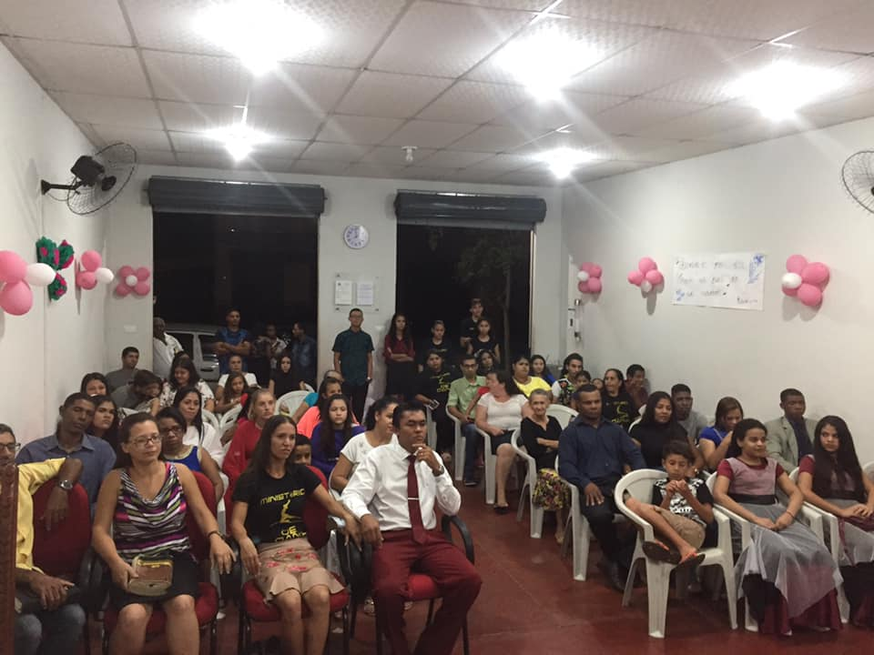
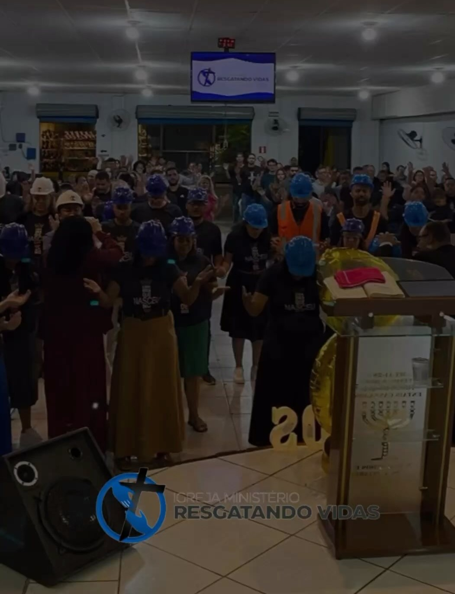

A Igreja
Nossa História
Fundada em 14 de maio de 2018, nossa igreja começou como um pequeno grupo de pessoas dedicadas a compartilhar o amor de Deus. Ao longo dos anos, crescemos e nos tornamos uma comunidade vibrante e acolhedora, comprometida com a fé, o serviço e o ensino da Palavra.


Onde Estamos
Nossa igreja está localizada em Avenida Ivai, 1304 - Paiçandu, PR. Venha nos visitar e participar de nossos cultos e eventos!